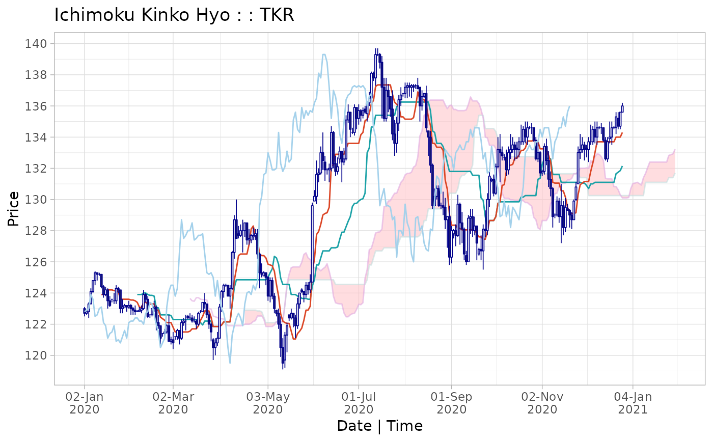

Custom print method for ichimoku objects.
# S3 method for ichimoku print(x, plot = TRUE, ...)
| x | an object of class 'ichimoku'. |
|---|---|
| plot | [default TRUE] set to FALSE to prevent automatic plotting of the ichimoku cloud chart. |
| ... | additional arguments passed along to print and plot functions. |
The ichimoku object supplied (invisibly). The data is printed to the console. The cloud chart is also output to the graphical device depending on the relevant parameter set.
This function is an S3 method for the generic function print() for class 'ichimoku'. It can be invoked by calling print(x) on an object 'x' of class 'ichimoku'.
Please refer to the reference vignette by running:
vignette("reference", package = "ichimoku")
#> open high low close cd tenkan kijun senkouA senkouB #> 2020-01-02 00:00:00 123.0 123.1 122.5 122.7 -1 NA NA NA NA #> 2020-01-03 00:00:00 122.7 122.8 122.6 122.8 1 NA NA NA NA #> 2020-01-06 00:00:00 122.8 123.4 122.4 123.3 1 NA NA NA NA #> 2020-01-07 00:00:00 123.3 124.3 123.3 124.1 1 NA NA NA NA #> 2020-01-08 00:00:00 124.1 124.8 124.0 124.8 1 NA NA NA NA #> 2020-01-09 00:00:00 124.8 125.4 124.5 125.3 1 NA NA NA NA #> 2020-01-10 00:00:00 125.3 125.3 124.8 125.2 -1 NA NA NA NA #> 2020-01-13 00:00:00 125.2 125.3 125.1 125.2 0 NA NA NA NA #> 2020-01-14 00:00:00 125.2 125.2 124.3 124.4 -1 123.9 NA NA NA #> chikou cloudT cloudB #> 2020-01-02 00:00:00 122.8 NA NA #> 2020-01-03 00:00:00 122.9 NA NA #> 2020-01-06 00:00:00 123.0 NA NA #> 2020-01-07 00:00:00 123.9 NA NA #> 2020-01-08 00:00:00 123.6 NA NA #> 2020-01-09 00:00:00 122.5 NA NA #> 2020-01-10 00:00:00 122.6 NA NA #> 2020-01-13 00:00:00 123.0 NA NA #> 2020-01-14 00:00:00 123.1 NA NA #> [ reached getOption("max.print") -- omitted 272 rows ]#> open high low close cd tenkan kijun senkouA senkouB #> 2020-05-19 23:00:00 122.7 122.7 121.8 122.4 -1 121.0 123.9 125.7 124.8 #> 2020-05-20 23:00:00 122.4 122.6 121.1 121.9 -1 121.0 123.9 125.7 124.8 #> 2020-05-21 23:00:00 121.9 123.7 121.7 123.3 1 121.4 123.8 125.7 124.8 #> 2020-05-24 23:00:00 123.3 124.0 123.0 124.0 1 121.5 123.8 125.7 124.8 #> 2020-05-25 23:00:00 124.2 124.3 124.0 124.1 -1 121.8 123.6 126.0 124.8 #> 2020-05-26 23:00:00 124.1 124.1 123.4 123.9 -1 122.2 123.6 126.5 124.8 #> 2020-05-27 23:00:00 123.9 124.7 123.7 124.5 1 122.9 123.6 126.6 124.8 #> 2020-05-28 23:00:00 124.5 124.7 123.9 124.2 -1 122.9 123.6 126.2 124.8 #> 2020-05-31 23:00:00 124.2 125.2 124.0 124.7 1 123.2 123.6 126.1 124.8 #> 2020-06-01 23:00:00 124.7 129.8 124.7 129.6 1 125.5 124.5 125.7 124.8 #> 2020-06-02 23:00:00 129.9 130.6 129.9 130.2 1 126.2 124.8 125.6 124.8 #> chikou cloudT cloudB #> 2020-05-19 23:00:00 135.1 125.7 124.8 #> 2020-05-20 23:00:00 135.6 125.7 124.8 #> 2020-05-21 23:00:00 134.5 125.7 124.8 #> 2020-05-24 23:00:00 134.3 125.7 124.8 #> 2020-05-25 23:00:00 135.9 126.0 124.8 #> 2020-05-26 23:00:00 135.2 126.5 124.8 #> 2020-05-27 23:00:00 135.7 126.6 124.8 #> 2020-05-28 23:00:00 135.4 126.2 124.8 #> 2020-05-31 23:00:00 135.7 126.1 124.8 #> 2020-06-01 23:00:00 135.6 125.7 124.8 #> 2020-06-02 23:00:00 136.2 125.6 124.8